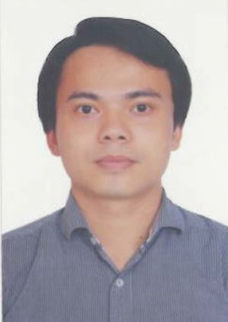

Chi Van Bui

Summary
I'm hardworking and dedicated individial with 15 years experience in telecom/monbile network delivery & support services.
Personal Details
- Full Name: Bui Van Chi
- Date of Birth: 12 Oct 1985
- Sex: Male
- Marital Status: Married
- Nationality: Vietnamese
Education
- Bachelor of Electrical and Electronic Engineering (Major in Electronic and Telecommunication) from HoChiMinh City University of Technology, Vietnam (2003-2008)
Working Experience
-
Customer Network Support Engineer - Ericsson VN
Jun 2017 - May 2024
- Handled 4G/5G Core customer service requests from telecom venders in VN ( Mobifone,Viettel,VNPT)
- Handled SW update/upgrade for 4G/5G Core Nodes
- Supported project delevery of 4G/5G Core project in cluding MME/AMF/SGW/PGW/SMF/UPF/PCRF/PCF...
-
RAN Support Engineer - Ericsson VN
May 2014 - May 2017
- Handled customer request on 2/3/4G RAN issues including platform/configuration/kpi issues
- Handled SW upgrade/update for BSC/RNC/EnodeB
-
Support Engineer/RAN Team Leader - Ericsson ThaiLand
Jan 2013 - Apr 2014
- Supported DTAC customer on solving KPI/Platform issue in RAN Network
- Supported 3G/4G network rollout
-
Integration Engineer - Ericsson VN
Jun 2028 - Dec 2012
- Supported GSM Network project delivery: MSC-S/MGW/BSC...
- Support handling customer request for 2G network issue
Skills
- Good knowledge in 5G Core (PCC, PCG, CCRC & CCPC), and 5G Core E2E network slicing configuration, 5G E2E use case.
- Experience with network level trouble shooting issue.
- Experience with cloud native, Ericsson CCD, K8s, Helm, CI/CD.
- Experience with vEPC & vSAPC nodes deployment/integration and acceptance test with customer.
- Good troubleshooting skills in EPC (MME, EPC & PCRF)
- Basic knowledge in IMS call flows and IMS network architect.
- Shell,Python Programing & Web development
Awards and Certifications
- Ericsson JS6 Support Engineer Certification
- ETCP Ericsson 5G Packet Core and Policy
- Ericsson vEPC Pro
- Ericsson Cloud Associate
- LF CKA
- LF CKAD
Other